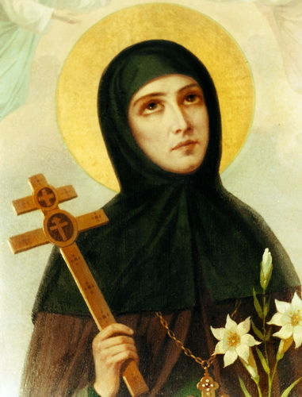
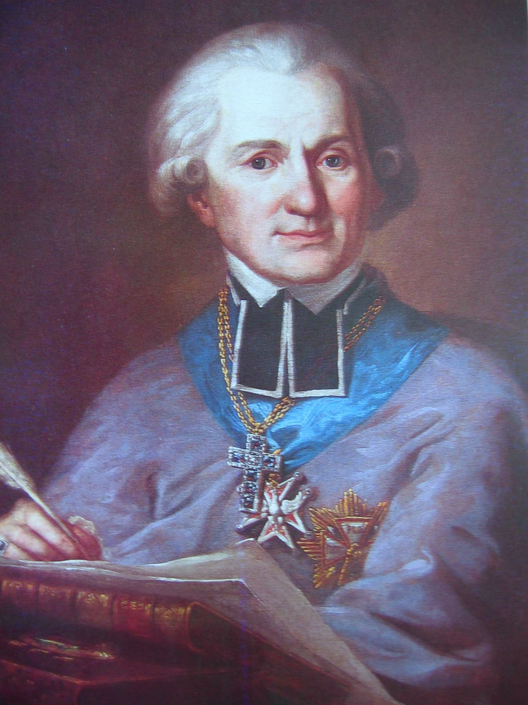
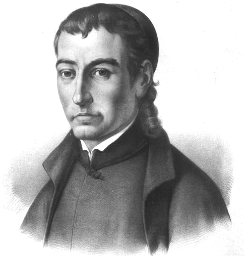
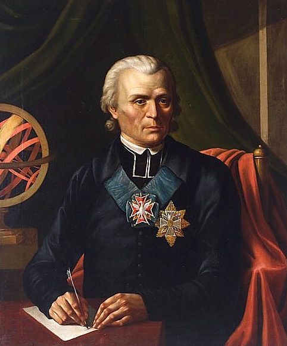
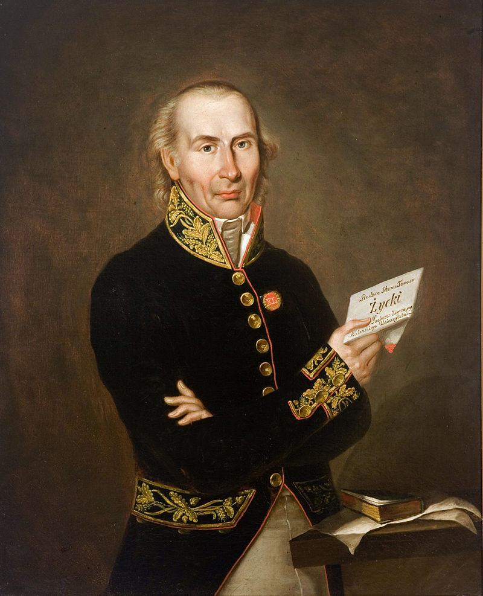
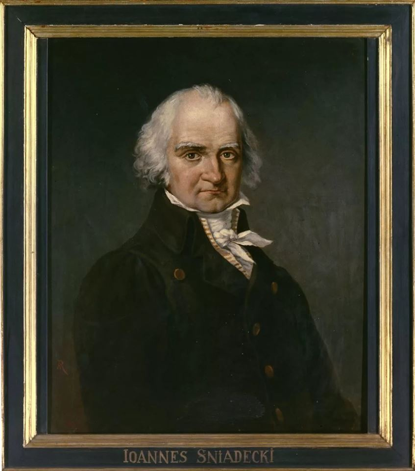

Евфросиния Полоцкая

1101 г. - 1167 г.
Евфросиния Полоцкая сделала многое для развития образования на территории Беларуси.
Она занималась переписыванием книг. Процесс письма был чрезвычайно сложный и медленный, это была нелёгкая физическая работа. Евфросиня также инициировала строительство храмов и монастырей.
Адам Нарушевич

20 октября 1733 г. - 6 июля 1796 г.
Поэт, историк
Описал жизнь и деятельность гетмана ВКЛ Яна Ходкевича. Определил три проблемы в истории Речи Посполитой: взаимоотношения церкви и государства, происхождение крепостного права, упадок Речи Посполитой и пути его преодоления. В дальнейшем историк создал многотомную «Историю польского народа» — первую светскую историю Речи Посполитой.
Казимир Нарбут

3 января 1738 г. - 17 марта 1807 г.
Просветитель, философ и учитель,
член ордена пиаров, профессор философии
Идеи: высказывался за реформы государства. Видел выход из тяжелого экономического положения в строительстве каналов, которые бы позволили Речи Посполитой развивать внутреннюю и внешнюю торговлю.
Произведения: учебник по логике на польском языке «Логика, или Наука размышления и мнения о предметах науки», автор курса «Эклектическая философия» и рукописей на латинском языке. Перевел с французского языка на польский книгу «Военная наука прусского короля для его генералов».
Матей Догель

6 августа 1715 г. - 24 февраля 1760 г.
Дипломат, историк
Идеи: стремился популяризировать исторические знания о Речи Посполитой.
Произведения: опубликовал «Кодекс дипломатов» — сборник межгосударственных актов, в которых он показал самостоятельность политики государства на протяжении нескольких веков.
Мартин Почобут-Одляницкий

30 октября 1728 г. - 20 февраля 1810 г.
Ректор Главной школы ВКЛ,астроном и математик
Идеи: основал астрономическую обсерваторию, где не только изучал планеты Солнечной системы, но и определял координаты населенных пунктов Беларуси. Пригласил известных преподавателей, среди которых были химики, физиологи, ботаники — именно они заложили фундамент естествознания в Вильне.
Произведения: был издателем «Виленского политического календаря» (с 1774 г.)
Томаш Гусаржевский

1783 г. - 1840 г.
Историк, профессор Главной школы ВКЛ
Идеи: пропагандировал просветительское понимание истории. Гусаржевский высказал идею о прогрес сивном развитии человечества по восходящей линии, пытался отделить церковную историю от светской.
Произведения: «Введение во всеобщую историю, особенно церковную».
Кароль Вырвич

2 ноября 1717 г. - 6 июня 1793 г.
Историк, географ